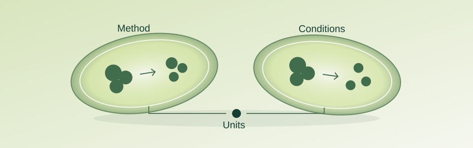

Quality & documentation
Site certificates and batch COAs: read the scope first
Which site and activities does a certificate cover, and which product and batch does a COA describe? A practical record keeps the questions separate.
Read the articleTechnical articles and process guides for the decisions behind enzyme-based biosolutions. Check product records, compare enzyme activity and plan what to measure in a trial.
Which site and activities does a certificate cover, and which product and batch does a COA describe? A practical record keeps the questions separate.
Read the article
A larger activity number is not the starting point. Keep the method, conditions and reporting basis beside each value before deciding what can be compared.
Read the articleRead the calculation and comparison methods when your evaluation needs more detail. Product pages keep their application and selection information alongside the preparation.
How enzymes workMeasuring activity recovery after pelletingPlanning a starch-to-alcohol process comparisonProduct and supplier documentsExplore enzyme products by industry